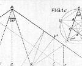
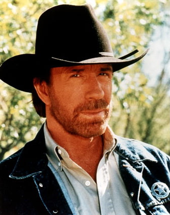

De: La Frikipedia, la enciclopedia extremadamente seria.
De: La Frikipedia, la enciclopedia extremadamente seria. De: La Frikipedia, la enciclopedia extremadamente seria.

|
ATENCIÓN Este artículo está en construcción. Su autor puede estar en la hora del bocata o haberlo dejado a medias. Si no eres quien esta trabajando en el artículo ten cuidado con lo que haces. ¡Si eres el editor terminalo ya! |
| ATENCIÓN El autor de este artículo se ha olvidado de enlazar otros artículos y ha perpetrado un Deadend. Hay que editar el artículo para que enlace a otros artículos |
|  | ATENCIÓN El autor de este artículo no aprendió geometría en el colegio, ha leído muy pocos libros en su vida y/o no se ha leído las ayudas. Así que es incapaz de producir un texto medianamente maquetado. Por lo tanto es necesario remendar el artículo. |

|
ATENCIÓN Este artículo es ilegible. Su autor se cree que está hablando por el méssenller, y un mono con un rodillo tendría menos faltas de ortografía. Por tanto, hay que editar el artículo revisando la ortografía, para vergüenza de su autor y regocijo de su corrector. |

|
ATENCIÓN El autor de este artículo es un auténtico borrico. Como no se ha leído las ayudas, se ha saltado a la torera un porrón de normas. Por tanto, hay que modificar el artículo, ya que de no haber nadie que lo modifique será eliminado pronto. |

|
ATENCIÓN Este artículo es un truño, es sólo un esbozo de un artículo o es demasiado corto o el que lo ha escrito se cree que esto es un vil diccionario. Su autor puede estar bajo los efectos del alcohol o ser un inútil. Quizá haya pistas en la discusión]. ¡Mejora la Frikipedia ampliando, mejorando o ignorando el artículo! |

|
ATENCIÓN Este artículo peca de patadas giratorias y/o voladoras y atenta contra el Segundo y/u Octavo mandamiento. |

|
ATENCIÓN Este artículo es más que un truño, es un miniesbozo de un artículo o es demasiado corto o el que lo ha escrito se cree que esto es un vil diccionario. Su autor puede estar bajo los efectos del alcohol o ser un inútil. Quizá haya pistas en la discusión. ¡Mejora la Frikipedia ampliando y mejorando el artículo! |

|
ATENCIÓN Este artículo es simple y llanamente malo. El autor tiene un humor de díficil comprensión para los frikipedistas en general o es que realmente no tiene ni puta gracia. Si crees que puedes mejorarlo inténtalo. |

|
ATENCIÓN Este artículo debería separarse en varios artículos. Ya que o bien habla de varios temas a la vez o que contiene definiciones o es tan extenso que debería ser dividido. Así que entra y corta, fragmenta, despedaza, trincha, escinde, parte, divide, separa, aisla, fracciona, amputa, cercena y secciona el artículo en varios de ellos. Si no sabes como empezar mira la discusión del artículo. Y no olvides desambiguar después. |

|
PELIGRO
Este artículo no es más que una torpe lista. Si crees que vale la pena, editalo para mejorar su calidad y excelencia |

|
ATENCIÓN Este artículo está huérfano, es decir, que ningún otro artículo enlaza a este artículo. Busca algún artículo que pueda enlazar aquí ya sea por mención o por relación temática y apadrínalo por lo que más quieras. |
MIRADLO
Este artículo está en La Picota.
Su autor ha escrito un supertruño, que ni viene a cuento ni tiene puñetera gracia.
Aquí queda expuesto para escarnio y vergüenza,
¡para que lo vea todo aquel que ose atreverse a seguir sus pasos!
Si eres su autor y quieres redimirte, haz un acto de contricción y muéstranos tu arrepentimiento aquí
 articulos que se hacen sin leerse las alludas que asín quedan despues sus creadores son unos impresentables que no merecen bibir y se llevan asi todas las plantillas incluso la de serio porque muchas beces bienen y ponen articulos copiados de la Wikipedia que es una enciclopedia malvada que planea dominar el mundo con la ayuda de chuc norris y los enanos saltarines come testiculos. Imagen:www.soytanlistoquepongoellinkexterno.com/noooooob.jpg
Lo mejor es avisar a chuck norris para que le de una patada giratoria al artículo o a un wombat para que lo mate, por que los administradores de este sitio son unos corruptos que no trabajan nada y no saben hacer la O con un vaso. los odio tanto que deberia matarlos seguro que son unos fachas/rojos que intentan dominar el mundo o algo peor sobre todo el neso ese que lo odio desde que me dijo que vigilara la maquetacion y el doctor grijander ese que seguro es un bujarra que toma por el culo en las esquinas
Texto en negritaTexto en cursivaTítulo del enlace es uno que bive en Valdemulas del Patacar ¡¡¡el mejor pueblo del mundo y quien diga lo contrario es un miserable!! y es un hijo de puta que le canta el aliento y la sobaca porque es un cerdo que no se ducha y en mi intityuto lo llamamos el ojolefo porque trabaja de chapero y un viejo se le corrio en el ojo ajajaja que tonto que es, seguro que si lo ve Chuck le salta los piños de una patada porque tiene una cara de tonto que tira de espaldas y ademas sus padres votan a l PSOE seran cabrones estan votando a un tio que quiere romper y españa y HOYGAN que se casen los amricones entre ellos menudos enfermos no vern que asin los espermatosoides se encuentran con caca y no pueden procrear me recuerda a la chica akella que tenia una mancha de lefa en el pelo jajaja que cerdaca seguro que venia de chuparsela a un subsaha de esos que vienen en patera a quitarnos el trabajo, seguro que son tan tontos como mi primo que se estaba bañando en el rio de mi pueblo (el mejor del mundo) y un lucio le mordio los guevos y iba corriendo por el pueblo despues el muy tonto y despues follo a su puta madre juaralu juaralu
es uno que bive en Valdemulas del Patacar ¡¡¡el mejor pueblo del mundo y quien diga lo contrario es un miserable!! y es un hijo de puta que le canta el aliento y la sobaca porque es un cerdo que no se ducha y en mi intityuto lo llamamos el ojolefo porque trabaja de chapero y un viejo se le corrio en el ojo ajajaja que tonto que es, seguro que si lo ve Chuck le salta los piños de una patada porque tiene una cara de tonto que tira de espaldas y ademas sus padres votan a l PSOE seran cabrones estan votando a un tio que quiere romper y españa y HOYGAN que se casen los amricones entre ellos menudos enfermos no vern que asin los espermatosoides se encuentran con caca y no pueden procrear me recuerda a la chica akella que tenia una mancha de lefa en el pelo jajaja que cerdaca seguro que venia de chuparsela a un subsaha de esos que vienen en patera a quitarnos el trabajo, seguro que son tan tontos como mi primo que se estaba bañando en el rio de mi pueblo (el mejor del mundo) y un lucio le mordio los guevos y iba corriendo por el pueblo despues el muy tonto y despues follo a su puta madre juaralu juaralu
LA frikiprdia es mejor que la inciclopedia son unos tontos estupidos que solo saven escrivir jilipoyeses Chuck Norris matara a esos wombats ascerosos.
queiro foshar soi virjen
vueno es facil solo tienes que decir al del otro messenjer que te diga su contraseña y le dices asi: ola olle me das tu contraseña? y si el dice si y te la da le puedes hackear despues cierras sesion y te metes en su messenjer y despues te descargas el jakeador para jakear el messenjer y eso es todo
oye dueño de la web como se ponen las imagenes?????????? esque quiero poner unas donde salgo yo y mi tia
Inserte aquí texto sin formato
por Cipriano (me la agarras con la mano)
Autor(es):


{kind=link}